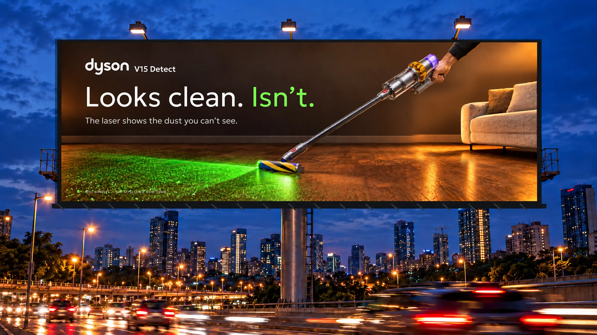

Art. Creative.
AI. Direction.
Из новой ниши в поток продаж. Легко.
Работ: 10


RAWMID
Арт-директор → креативный директор, Made In Dream (RAWMID)
RAWMID · бренд-платформа и визуальная система



Dyson V15
Креативный директор, концепт
рекламный концепт · не заказ
RAWMID
Арт-директор → креативный директор, Made In Dream (RAWMID)
Ролик до разбора и после.

СтандартыКреативный директор, собственный проектЗадачи, часы и правки вместо переписки.
Каждая правка становится правилом команды.